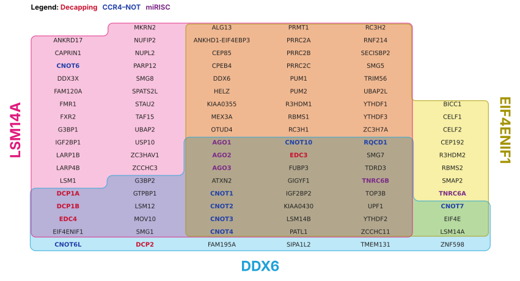
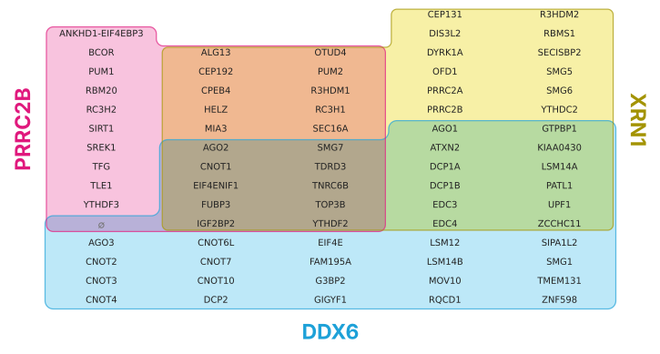

load_example
def load_example(
name:str='pbody'
)->dict:Load a bundled example: a dict with sets, categories, category_colours, scores and text describing it.
The examples come from Youn et al. (2018), who ran BioID on 119 human proteins involved in RNA biology, as curated by BioGRID (release 5.0.262, MIT License). data/README.md says exactly how the file was cut from BioGRID’s download.
Youn J-Y et al. (2018). High-density proximity mapping reveals the subcellular organization of mRNA-associated granules and bodies. Molecular Cell 69:517–532. doi:10.1016/j.molcel.2017.12.020
Two examples are built here:
pbody: three P-body baits, DDX6, LSM14A and EIF4ENIF1 (4E-T). These are the three proteins needed for P-body assembly in every condition Ayache et al. (2015) tested, so their hits overlap heavily: 101 preys, all seven zones filled.decay: DDX6, PRRC2B and the exonuclease XRN1. No prey is shared by DDX6 and PRRC2B alone, which makes it a good test of Venn mode (show_empty=True).Each prey also gets a real number to play with: how many of the study’s 118 baits found it. Common hits like the CCR4–NOT subunits are found by dozens of baits, and rarer ones by only a few.
Load a bundled example: a dict with sets, categories, category_colours, scores and text describing it.
The rest of this notebook rebuilds itemiset/data/examples.json (for Python) and site/assets/example-data.js (for the website) from the BioGRID file.
root = Path("..")
bg = pd.read_csv(root/"data/youn2018_biogrid-5.0.262.tab3.txt.gz", sep="\t", dtype=str)
A, B = "Official Symbol Interactor A", "Official Symbol Interactor B"
assert set(bg["Publication Source"]) == {"PUBMED:29395067"}
assert set(bg["Experimental System"]) == {"Proximity Label-MS"}
preys = {bait: sorted(set(g[B]) - {bait}) for bait, g in bg.groupby(A)}
found_by = bg.groupby(B)[A].nunique().to_dict()
len(preys), len(bg)(118, 7489)Illustrative groupings by gene family, to show how categories colour the names. They aren’t GO annotations.
GROUPS = {
"Decapping": ["DCP1A", "DCP1B", "DCP2", "EDC3", "EDC4"],
"CCR4–NOT": ["CNOT1", "CNOT2", "CNOT3", "CNOT4", "CNOT6", "CNOT6L", "CNOT7", "CNOT8", "CNOT10", "CNOT11", "RQCD1"],
"miRISC": ["AGO1", "AGO2", "AGO3", "TNRC6A", "TNRC6B", "TNRC6C"],
}
COLOURS = {"Decapping": "#C8102E", "CCR4–NOT": "#2140A8", "miRISC": "#7B2A86"}
def make_example(baits, title, description):
sets = [[b, preys[b]] for b in baits]
union = sorted({p for _, v in sets for p in v})
cats = {g: c for c, gs in GROUPS.items() for g in gs if g in union}
return dict(title=title, description=description,
source="Youn et al. (2018) Mol Cell 69:517, via BioGRID 5.0.262 (MIT License)",
sets=sets, categories=cats,
category_colours={c: COLOURS[c] for c in COLOURS if c in cats.values()},
scores={p: int(found_by[p]) for p in union},
score_label="Number of the study's 118 baits that found this protein")
examples = {
"pbody": make_example(["DDX6", "LSM14A", "EIF4ENIF1"], "P-body baits",
"Proteins found by BioID with three P-body baits in human cells."),
"decay": make_example(["DDX6", "PRRC2B", "XRN1"], "Decay baits",
"DDX6, PRRC2B and XRN1. No prey is shared by DDX6 and PRRC2B alone."),
}
{k: [(n, len(v)) for n, v in ex["sets"]] for k, ex in examples.items()}{'pbody': [('DDX6', 42), ('LSM14A', 84), ('EIF4ENIF1', 62)],
'decay': [('DDX6', 42), ('PRRC2B', 30), ('XRN1', 44)]}Write the files only if they’ve changed, so rerunning this notebook doesn’t touch them:
def write_if_changed(path, text):
path = Path(path)
if path.exists() and path.read_text(encoding="utf-8") == text: return False
path.parent.mkdir(parents=True, exist_ok=True)
path.write_text(text, encoding="utf-8")
return True
js = json.dumps(examples, ensure_ascii=False, indent=1)
write_if_changed(root/"itemiset/data/examples.json", js + "\n")
write_if_changed(root/"site/assets/example-data.js",
"// Generated by nbs/05_examples.ipynb. Do not edit by hand.\n"
f"window.ITEMISET_EXAMPLES = {js};\n")False
test_eq(lay.n_items, 101)
counts = {" & ".join(n for n in lay.names if n in z): k for z, k in lay.counts.items()}
test_eq(counts, {"DDX6": 6, "LSM14A": 24, "EIF4ENIF1": 8, "DDX6 & LSM14A": 9, "DDX6 & EIF4ENIF1": 3,
"LSM14A & EIF4ENIF1": 27, "DDX6 & LSM14A & EIF4ENIF1": 24})
assert all(check_layout(lay, ex["sets"]).values())The decay example has one empty zone, which Venn mode shows as a ∅ cell:
["1 empty zone(s) shown as '∅' placeholder cells (1 cell each; not area-proportional)."]